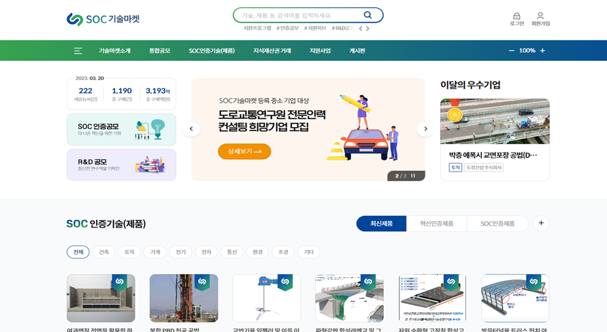
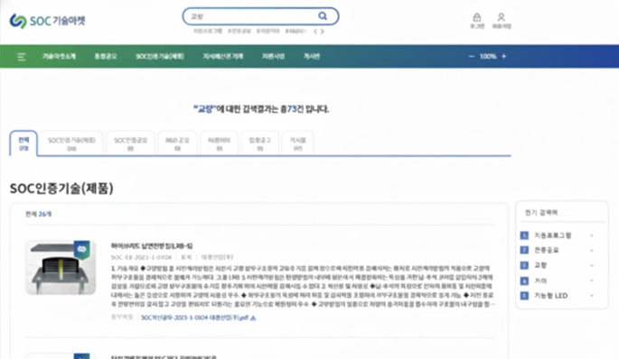
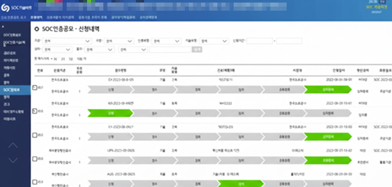

Public / SI • eGovFrame • Solution Integration
techmarket.kr ↗
SOC 기술마켓
시스템 고도화
공모 프로세스 고도화 및 보안(암복호화), 통합검색, 외부 API 통합을 통해 운영 안정성과 사용자 경험을 개선한 프로젝트입니다.
eGovFrame
Java
MsSQL
암복호화
통합검색
외부 API
System Architecture
프로젝트 개요
중소기업의 기술/제품 공모, 마케팅, 소통 창구를 제공하는 플랫폼으로, 복잡한 공모 흐름을 구조화하고 보안/검색 솔루션을 통합하여 운영 안정성을 확보했습니다.
-
공모 프로세스 구조화Consistency
기존 단일 신청 방식에서 추가 인증 및 신청자-공모 다중 연결 프로세스를 포함하도록 공모 로직을 전면 개편. ERD 확장을 포함한 데이터 모델링으로 복잡한 비즈니스 흐름을 구조화하고 트랜잭션 안정성을 확보.
-
보안 솔루션 통합Security
개인정보 보호 강화를 위해 D'Amo 암복호화 솔루션을 도입하고, 민감 정보 저장/조회 구간에 암복호화 쿼리를 적용하는 로직을 백엔드 전반에 통합. 성능 저하를 최소화하기 위해 쿼리 레벨 최적화를 수행.
-
통합 검색 연동Performance
기술/제품 정보, 공모, 공지 등 서비스 내 콘텐츠를 빠르게 검색할 수 있도록 코난테크 통합 검색 연동 모듈을 설계 및 구현. 검색 성능을 개선하고 검색 부하를 검색 엔진으로 분산하여 백엔드 부담을 완화.
-
외부 서비스 API 통합Integration
알림톡, SMS, 이메일 등 메시징 서비스와 공공데이터/크롤링 API를 연동하여 사용자 커뮤니케이션 및 정보 제공 기능을 확장. 공모 진행 상황에 대한 알림 체계를 구축하여 서비스 접근성과 사용자 경험을 개선.
담당 역할
- 프로세스/설계
공모 로직 아키텍처 기획 및 흐름 구조화 - 데이터
ERD 확장·정합성 관점의 모델링 및 트랜잭션 안정화 - 연동
보안(암복호화), 검색(통합검색) 솔루션 및 외부 API 통합
프로젝트를 통해 얻은 역량
- 복잡한 비즈니스 로직 설계
단순 CRUD를 넘어 다단계 검증 및 다중 데이터 연결이 필요한 프로세스를 구조적으로 설계·구현. - 외부 연동 전문성
보안/검색 솔루션 및 다양한 외부 API를 안정적으로 통합하며 실무 연동 역량을 강화. - 운영 관점의 개발
요구사항 반영 및 피드백 기반 개선을 반복하며 운영 환경에 적합한 안정성을 확보.
주요 서비스 화면

사용자 메인 페이지

통합 검색: 코난테크 연동 및 필터링 시스템

관리자 공모 리스트 관리 페이지